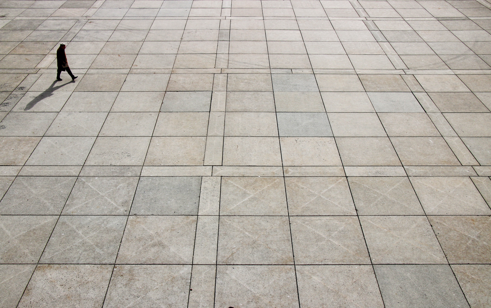

장소란 무엇일까?
자연과 인간이 생존하며 인간 활동이 펼쳐지는 지표를 말한다. 장소에 대한 이해를 통하여 특정 장소에 대한 감각을 갖게 되며, 장소에 대한 인식은 개인, 사회 집단 또는 시대적 상황에 따라 다를 수 있다. 장소에 대한 인식이 다른 까닭은 사람들이 가진 지식 · 경험 · 정서 등이 각기 다르기 때문이며, 이러한 장소에 대한 인식의 차이는 입지 결정에 영향을 주고 있다.
(Basic 고교생을 위한 지리 용어사전, 2002. 2. 5., (주)신원문화사)